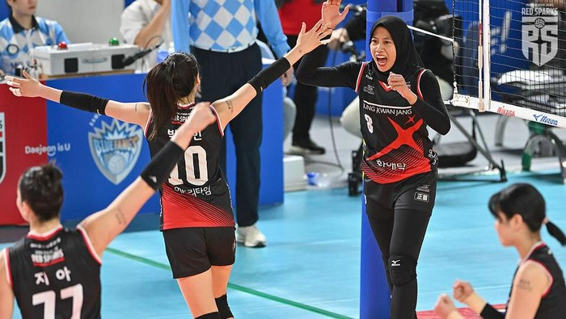

'Ratu Voli' Korea Apresiasi Megawati Hangestri: Dia Menakutkan!

Incheon - Legenda voli Korea Selatan, Kim Yeon-koung, mengapresiasi performa Megawati Hangestri
Pertiwi. Bintang Pink Spiders itu mengakui Megatron gacor di lapangan.
Pink Spiders keluar sebagai kampiun Liga Voli Putri Korea, Selasa (8/4/2025) malam WIB.
Skuad asuhan Marcello Abbondanza juara usai mengalahkan Red Sparks 3-2 dalam 5 game.
Pada pertandingan kelima yang berlangsung di Samsan World Gymnasium, Incheon, Pink Spiders
menang 26-24, 26-24, 24-26, 23-25, dang 15-13. Kim Yeon-koung jadi pemain Pink Spiders yang
yang menyumbang poin terbanyak (34 poin).
Gelar juara Liga Voli Putri Korea jadi kado manis buat Kim Yeon-koung. Pemain yang dijuluki 'Ratu Voli'
ini mengakhiri kariernya dengan gelar juara setelah dalam 3 final terakhir harus puas jadi runner-up.
Kim Yeon-koung sudah berkarier selama 21 tahun dalam dunia voli dan menjadi kebanggaan Korea Selatan. Pevoli
37 tahun ini berhasil mempersembahkan medali emas Asian Games 2014 buat Negeri Gingseng, serta jadi pemain Asia
pertama yang meraih MVP di kompetisi Eropa (CEV Women's Champions League) bersama klub Turki, Fenerbahce.
Gelar juara Liga Voli Putri Korea musim ini diakui Kim Yeon-koung amat sulit diraih. Dia terutama memuji performa
bintang Red Sparks, Megawati Hangestri Pertiwi, yang sukses meraih poin terbanyak (37 poin) pada partai pamungkas.
"Dia telah tumbuh menjadi pemain yang benar-benar menakutkan dan telah menaikkan level bola voli kami," kata Kim usai
final Liga Voli Putri Korea, dilansir dari Chosun Ilbo. "Di sisi lain, saya bertanya-tanya seberapa menakutkannya seandainya
saya bertemu dengannya sebagai anggota tim nasional Indonesia." ujarnya soal Megawati.
Lihat Artikel Lainnya
Lihat Artikel Sebelumnya